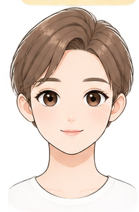

CLOTHING & TEXTILES · FEATURE 02
🧵
服裝與織品
縫紉技巧、衣物保養、美感穿搭
點選下方主題，瀏覽對應的課程內容。
{{ activeTopic.desc }}
{{ openStyleTopicDesc }}
美感穿搭 × 認識自己
測測我的臉型 ✨
觀察臉部的寬度、長度與下巴輪廓，完成 4 個小問題，找找看你的臉型比較接近哪一種。

♡ 臉型沒有好壞，每一種輪廓都有自己的特色
{{ faceStepText }}
{{ faceQuestion.step }}
{{ faceQuestion.title }}
{{ faceQuestion.hint }}
測驗結果

你的臉部輪廓比較接近
{{ faceResult.name }}
🔍 輪廓小觀察
{{ faceResult.desc }}
👗 美感穿搭小任務
接著觀察不同髮型、領型與耳飾，會如何改變臉部的視覺比例。
真人臉型可能同時具有多種特徵，本測驗作為觀察與學習參考。
透過肩寬、胸圍、腰圍、臀圍四個測量值，找出你的身形類型，並在互動遊戲中探索服裝如何改變視覺比例。
開始體型判斷 →從日常清潔開始，找出讓自己看起來清爽有精神的小習慣。
🧴 你真的會洗頭嗎？
先看懂五個步驟，再完成下面的生活小挑戰。
日常清潔｜洗頭五步驟
{{ hairWashStepTitle }}
{{ hairWashStepText }}
⚡ 洗頭快問快答
每題選一個答案，看看你的日常習慣有沒有踩雷。
第 {{ hairQuizNumber }} 題／共 {{ hairQuizTotal }} 題
{{ hairQuizQuestion }}
{{ hairQuizFeedbackTitle }} {{ hairQuizFeedback }}
🪞 我的洗頭習慣 CHECK
□ 洗頭前先把頭髮梳順 □ 洗髮精先在手中搓開 □ 用指腹畫圓清洗 □ 洗後用毛巾輕拍吸水 □ 吹風機與頭髮保持適當距離
起床後的頭髮怎麼救？
不是一亂就猛梳。先看狀況，再用對方法把整體整理得清爽自然。
日常儀容｜頭髮整理
{{ hairCareStepTitle }}
{{ hairCareStepText }}
🎯 整理頭髮小挑戰
用生活情境判斷，看看你會不會不小心越整理越亂。
第 {{ hairCareQuizNumber }} 題／共 {{ hairCareQuizTotal }} 題
{{ hairCareQuizQuestion }}
{{ hairCareQuizFeedbackTitle }} {{ hairCareQuizFeedback }}
🧼 梳具也要整理
梳子與髮刷會卡住落髮、灰塵與造型品殘留。看得到的落髮先清除，並依材質適當清潔、充分乾燥。
✨ 清爽感最後 10 秒
照鏡子看正面與側面，再看看瀏海、分線、衣領與肩膀。整齊、自然、有精神，就很好。
😶🌫️ 痘痘到底怎麼來？
從「痘痘是什麼」開始，認識常見名稱、可能的形成過程與日常照護。重點不是自己診斷，而是學會觀察與做出適當處理。
青春痘｜互動小教室
① 青春痘是什麼？
青春痘（痤瘡）常出現在青春期，外觀可能從粉刺到紅腫、發炎的痘痘都有。不同狀態看起來不一樣，所以不能只用「有沒有紅」來判斷，也不需要自己替痘痘下診斷。
② 為什麼會長？
痘痘通常不是單一生活習慣造成。可以先用簡單流程理解：皮脂分泌增加 → 毛孔出口不順、形成阻塞 → 出現粉刺；如果進一步發炎，就可能出現紅腫的丘疹、膿皰或較深的結節。
🔎 點一點：痘痘有哪些常見狀態？
先點名稱，再看說明。
{{ acneTypeTitle }}
{{ acneTypeText }}
🎯 痘痘小挑戰
用你剛才看到的內容來判斷。
第 {{ acneQuizNumber }} 題／共 {{ acneQuizTotal }} 題
{{ acneQuizQuestion }}
{{ acneQuizFeedbackTitle }} {{ acneQuizFeedback }}
🪞 生活細節也會影響
除了清潔方式，作息、情緒壓力與反覆摳抓痘痘等生活細節，也可能影響臉部皮膚狀況。看到痘痘時，先避免一直摸、摳或擠。
🩺 什麼時候找專業？
如果痘痘明顯嚴重、反覆發炎、疼痛，或讓你很困擾，不必一直自己嘗試處理，可以尋求皮膚科專業醫師協助。
🚿 洗澡前，也要先看時機
洗澡不只是「有沒有洗乾淨」。先看現在適不適合洗，再注意冬天進浴室時怎麼讓身體慢慢適應。
日常清潔｜洗澡安全小提醒
👆 點一點：洗澡前先注意什麼？
三個情況都很生活化，點開看看原因。
{{ bathTipTitle }}
{{ bathTipText }}
🎯 洗澡情境挑戰
不是背答案，而是練習遇到情況時怎麼做。
第 {{ bathQuizNumber }} 題／共 {{ bathQuizTotal }} 題
{{ bathQuizQuestion }}
{{ bathQuizFeedbackTitle }} {{ bathQuizFeedback }}
🪞 洗澡前 10 秒 CHECK
□ 我不是剛吃飽 □ 我現在沒有血糖偏低或明顯不舒服 □ 冬天會先從腳部開始，讓身體慢慢適應水溫
✨ 清爽感，藏在容易忽略的小地方
洗臉、洗頭、洗澡做好之後，還有一些小地方會影響整體感覺。不是要變得完美，而是讓自己看起來整齊、乾淨、自然、有精神。
整體儀容｜最後 30 秒
👆 哪些地方容易忘記？
點開五張小卡，看看出門前還能快速注意什麼。
{{ freshDetailTitle }}
{{ freshDetailText }}
🎯 清爽情境挑戰
真正遇到生活情況時，你會怎麼處理？
第 {{ freshQuizNumber }} 題／共 {{ freshQuizTotal }} 題
{{ freshQuizQuestion }}
{{ freshQuizFeedbackTitle }} {{ freshQuizFeedback }}
🪞 出門前 30 秒 CHECK
□ 頭髮整齊 □ 臉部清爽 □ 口腔已清潔 □ 手與指甲乾淨 □ 衣領與肩膀整齊 □ 衣物、鞋襪沒有明顯汗濕
做到幾項就先從幾項開始。清爽感來自穩定的小習慣，不是一次做到滿分。
{{ freshPlaceholderTitle }}
這一區的互動內容準備中，之後會逐步加入課程活動。
🫧 洗臉不是越用力越乾淨
先把臉輕輕拍濕，洗面乳在掌中搓出泡沫，再用指腹輕柔清潔。下面可以先看完整步驟圖，再開啟動畫，一步一步觀察洗臉方向。


點選步驟，依序看看正確的洗臉方向
張鈺聆 製